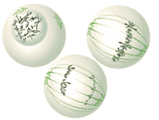

Cell Membranes Learn that membranes are fluid, with components
that move, change, and perform vital physiological roles as
they allow cells to communicate with each other and their
environment.
Cell Signaling Learn that living organisms constantly
receive and interpret signals from their environment. Cells
of multi-cellular organisms also receive signals from other
cells, including signals for cell division and differentiation.
Studying
Cells Introduce yourself
to the cell as the fundamental unit of life and the scientific
method.
The
Cell Cycle & Mitosis Understand the events that occur in
the cell cycle and the process of mitosis that divides the duplicated
genetic material creating two identical daughter cells.
Meiosis
Understand the events that occur in process of meiosis that
takes place to produce our gametes.
Prokaryotes,
Eukaryotes, & Viruses Learn about the cells that make
up all living systems, their organelles, and the differences
between living cells and viruses.
The
Cytoskeleton Learn that the cytoskeleton acts both a muscle
and a skeleton, and is responsible for cell movement, cytokinesis,
and the organization of the organelles within the cell.
Overview of Cells
including their makup and the differences between animal and plant cells (link courtesy of Carey Konarski)
CELLS
Alive! is a
highly visual site, where you will find movies and animated illustrations
on cell processes, parasites, penicillin and more.
cell.de Online-Service for Cell Biology
includes digital media in internet quality and further information
for university and high school on cellular and molecular biology.
The IWF - Institute for Scientific Film, Göttingen (Germany)
prepares educational media about cellular and molecular biology
didactically and technically for different media carriers.
C.
elegans Movies A visual introduction
to C. elegans and its development. This page has links to movies
made by C. elegans researchers worldwide.
Biology
Mad. This website is mainly aimed for students studying
AQA (spec. A) Biology in the UK. It is informative, beautifully
designed and easy to use.
http://www.actionbioscience.org is
an education resource of the American Institute of Biological
Sciences. The site provides peer-reviewed articles by scientists,
science educators, and science students. In addition, the web
site provides educators with original lessons and other resources
to enhance bioscience teaching.
Selected articles are translated into Spanish.
biochem4schools, is an online collection of biochemistry
resources. With comprehensive reviews and extensive cross-referencing,
this site will be an indispensable tool for teachers and students
involved in biochemistry at all levels.
|